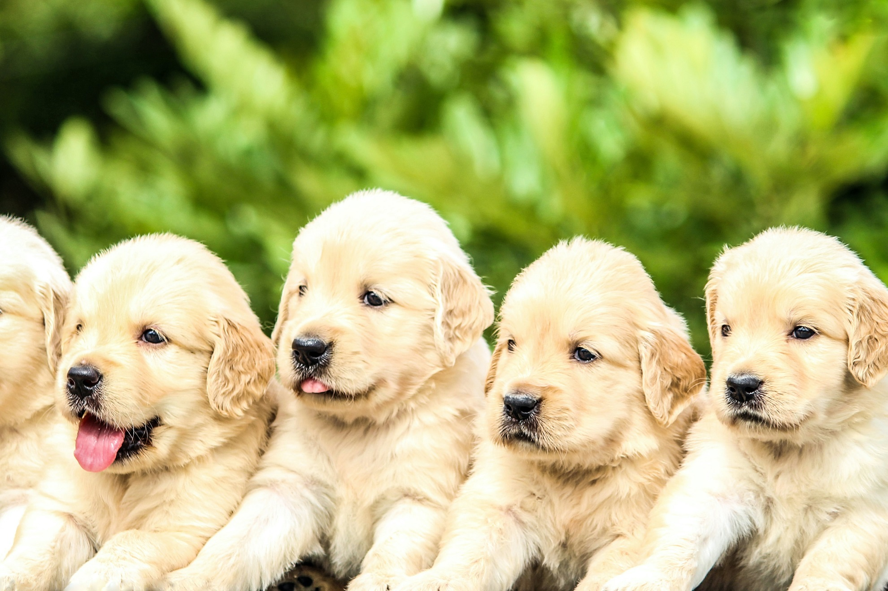
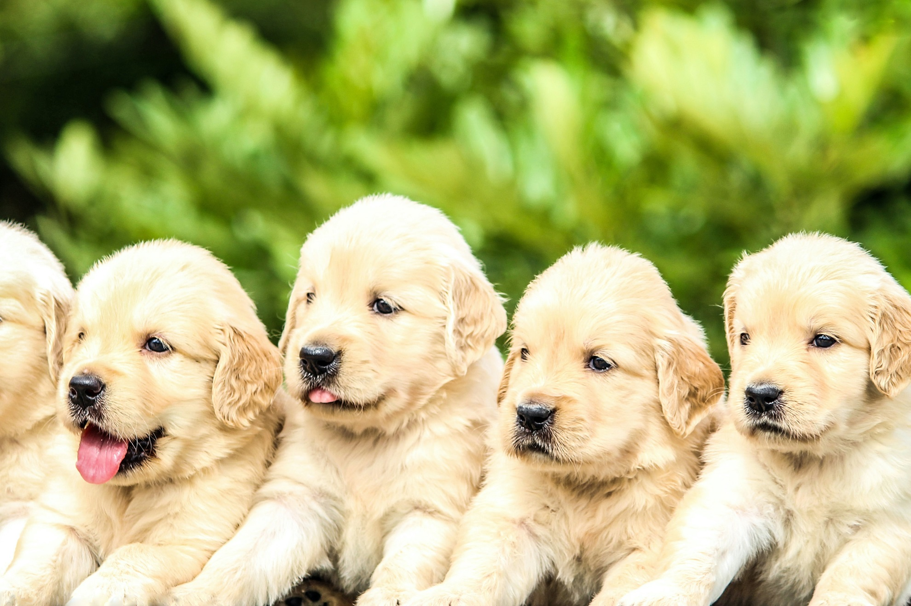
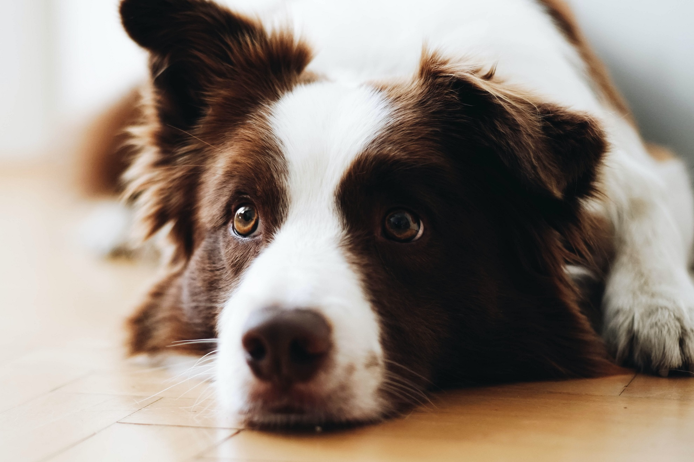
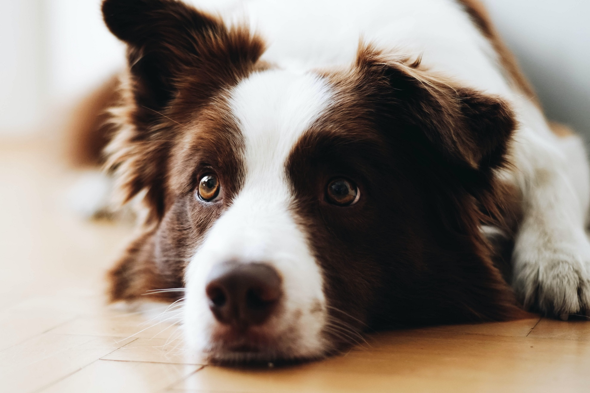

 



On average, dogs are bigger. So there is more of them to love and more fur to stroke.
Their ears occasionally do that thing where one flops down up and one sticks up. This is very enjoyable.
No animal can match puppies for puppy-dog eyes.
Sometimes you could mistake them for a pack of baby seals.
Dogs are very scholarly and can assist you with the basics of grammar, rhetoric, and logic.
Some dogs look like raw dough that has been left out in the sun too long. But that's okay – they are having a great time.
Dogs help out with all sorts of jobs. When was the last time you saw a sheepcat?
Some dogs wear handkerchiefs.
Dogs are loyal, fun, and always pleased to see you. They come in all shapes and sizes and they are all very good.